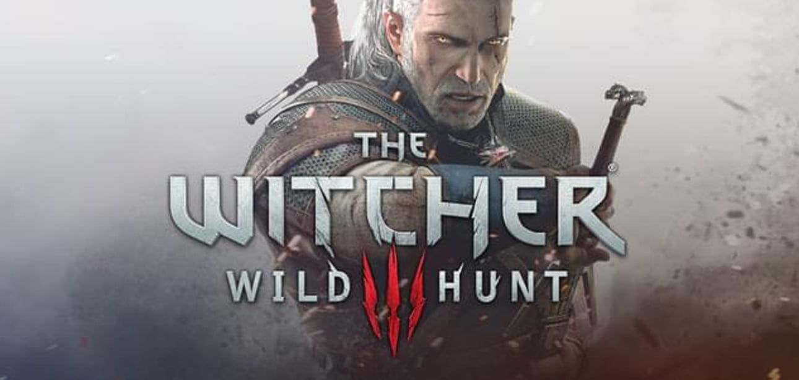
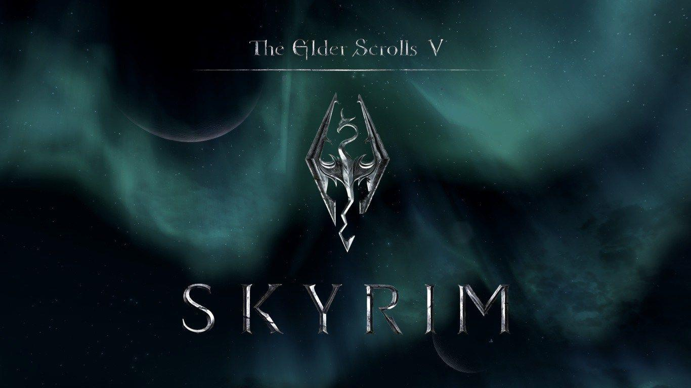
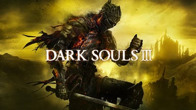

RPG
Komputerowa gra fabularna z angielskiego computer role-playing game, w skrócie cRPG to gatunek gier komputerowych, w którym gracz kontroluje bohatera (lub drużynę) poruszającego się po najczęściej fikcyjnym świecie. Często gracz tworzy własną postać, określając jej cechy i wygląd zewnętrzny. W trakcie rozgrywki można pomagać postaciom niezależnym i zabijać przeciwników, dzięki czemu awansuje się na kolejne poziomy i zdobywa nowe umiejętności. Komputerowa gra fabularna może rozgrywać się w różnych konwencjach, np. fantasy, science fiction czy steampunk. Pierwsze komputerowe gry fabularne powstały w latach 70. XX wieku, inspirowane głównie tradycyjnymi grami fabularnymi. Wiele gier cRPG ma podobną terminologię, mechanikę i świat gry. Podgatunkami gier fabularnych są: fabularna gra akcji, hack and slash, jRPG, MMORPG, roguelike, MUD i SUD.
Pare przykładów:

"Wiedźmin 3: Dziki Gon" z angielskiego "The Witcher 3: Wild Hunt" to fabularna gra akcji wyprodukowana i wydana przez CD Projekt Red 19 maja 2015 na platformy Microsoft Windows, PlayStation 4 i Xbox One.
Gra jest kontynuacją wydanego w 2007 roku "Wiedźmina" oraz "Wiedźmina 2: Zabójców królów", który miał swoją premierę w 2011 roku. Tak jak poprzednie części, opowiada ona historię tytułowego wiedźmina – Geralta z Rivii – i jest osadzona w świecie wiedźmina, którego twórcą jest Andrzej Sapkowski. Produkcja jest ostatnią częścią cyklu, którego głównym bohaterem jest tytułowy wiedźmin, razem z nią stanowiącego trylogię.
Pierwszy zwiastun produkcji został zaprezentowany na konferencji Microsoftu na targach E3 w czerwcu 2013 roku. Ponadto Wiedźmin 3 zdobył tam kilkadziesiąt nagród oraz nominacji przyznanych przez czasopisma i portale z branży gier komputerowych. Wersja na Nintendo Switch została zapowiedziana na prezentacji przedsiębiorstwa na targach E3 w 2019 roku. Wersja na konsole przenośne japońskiej marki ukazała się 15 października 2019.
Akcja "Wiedźmina 3" rozgrywa się w fikcyjnym świecie fantasy stworzonym przez pisarza Andrzeja Sapkowskiego w serii opowiadań i powieści. Gracz ma okazję zwiedzić wyspy Skellige, Wolne Miasto Novigrad, Oxenfurt, wiedźmińskie siedliszcze Kaer Morhen czy ponure moczary Velen. Gra rozpoczyna się pół roku po wydarzeniach z poprzedniej części. Wiedźmin Geralt odzyskuje w końcu pamięć, nie ma jednak zamiaru przyłączyć się do którejkolwiek ze stron konfliktu. Zamiast tego zajmuje się on poszukiwaniem Dzikiego Gonu oraz swoich bliskich, m.in. Yennefer z Vengerbergu i Ciri.

"The Elder Scrolls V: Skyrim" skrótowo "Skyrim" to fabularna gra akcji o otwartym świecie, wyprodukowana przez Bethesda Game Studios i wydana przez Bethesda Softworks w 2011 roku. "Skyrim" jest piątym tytułem z serii The Elder Scrolls oraz kontynuacją gry "The Elder Scrolls IV: Oblivion". Gra została zapowiedziana 11 grudnia 2010 roku podczas Spike Video Game Awards i wydana 11 listopada 2011 roku na platformy Microsoft Windows, PlayStation 3 i Xbox 360. Od 12 kwietnia 2012 roku obsługuje również urządzenia Kinect.
Skyrim został stworzony na całkowicie nowym silniku graficznym o nazwie Creation Engine, który zastąpił silnik Gamebryo użyty w dwóch poprzednich grach z serii. Nowy silnik zawiera niektóre z istniejących technologii wykorzystywanych w innych produkcjach Bethesdy, takich jak Oblivion i Fallout 3. Producent wykonawczy Todd Howard oznajmił, że studio zatrudniło nowych pracowników, aby znacznie poprawić wygląd postaci i animacje w stosunku do poprzednich gier Bethesdy.
Edycja kolekcjonerska gry zawierała m.in. figurkę smoka, mapę świata gry, artbook oraz płytę DVD z materiałami z produkcji. Na komputery osobiste gra została wydana w pełnej polskiej wersji językowej z możliwością wyboru oryginalnych głosów, natomiast na konsole tylko w angielskiej wersji językowej.

"Dark Souls III" to fabularna gra akcji wyprodukowana przez From Software i wydana przez Namco Bandai Games na komputery z systemem Windows oraz na konsole PlayStation 4 i Xbox One. Została zapowiedziana podczas targów E3 2015, a jej premiera odbyła się 24 marca 2016 w Japonii oraz 12 kwietnia 2016 w Europie i Ameryce Północnej. Gra jest kontynuacją "Dark Souls II" z 2014. Wydawca nie ujawnił dokładnych wyników sprzedaży gry, jednakże ogłosił, że "Dark Souls III" to najszybciej sprzedająca się gra w historii firmy.
"Dark Souls III" należy do gatunku trzecioosobowych fabularnych gier akcji osadzonych w świecie dark fantasy. Rozgrywka jest bardzo podobna do tej z poprzednich gier z serii Souls. Gracz na początku kreuje wizerunek postaci i wybiera dla niej jedną z dwunastu klas, która wpływa tylko na początkowy rozdział atrybutów i startowy ekwipunek. Właściwa rozgrywka polega na przemierzaniu lokacji, walce z przeciwnikami – w tym z bossami – oraz poszukiwaniu różnorakich przedmiotów. Dzięki walce z wrogami oprócz nowego ekwipunku gracz może zdobywać tytułowe dusze, z angielskiego souls, które służą do zwiększania atrybutów postaci sterowanej przez gracza.